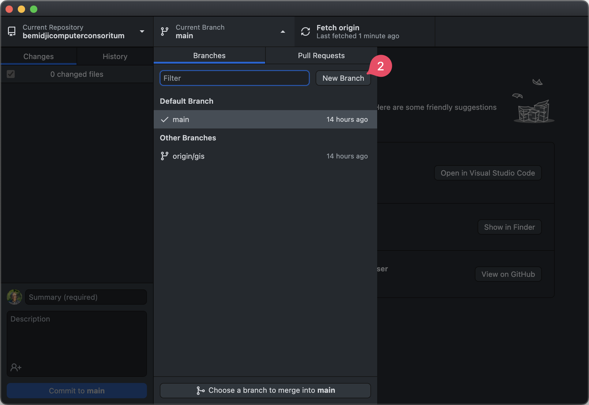
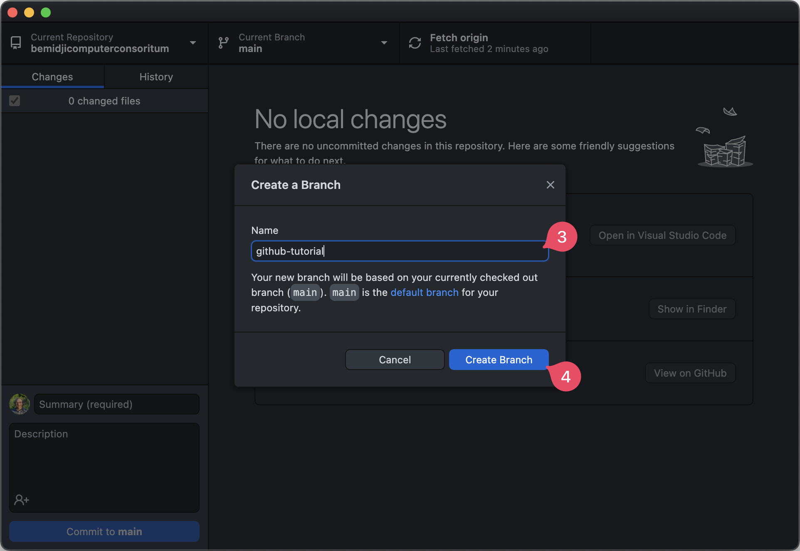
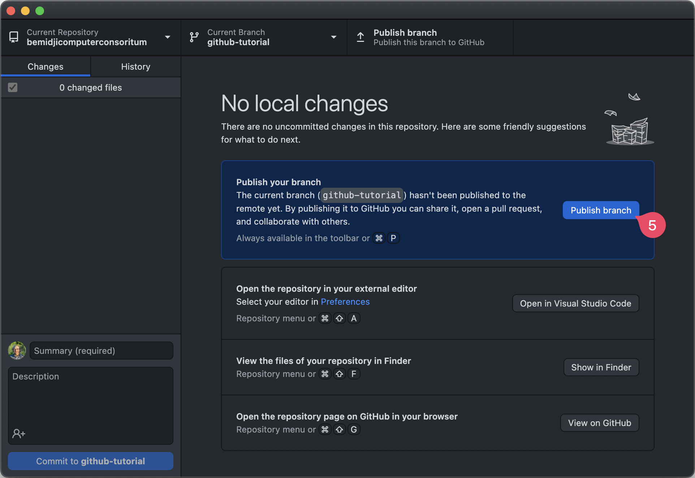
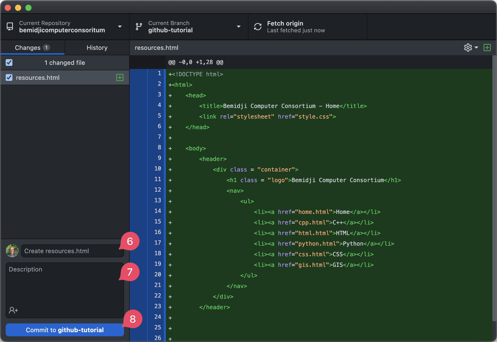
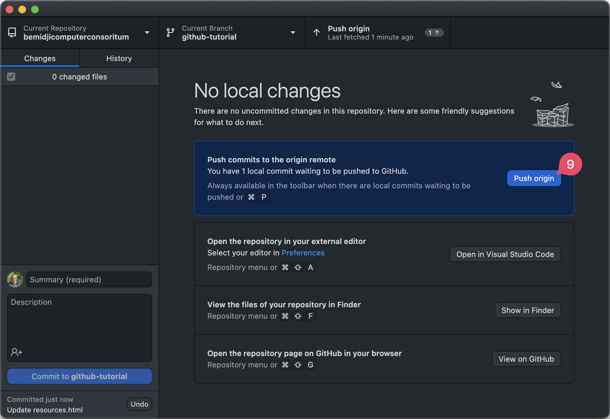
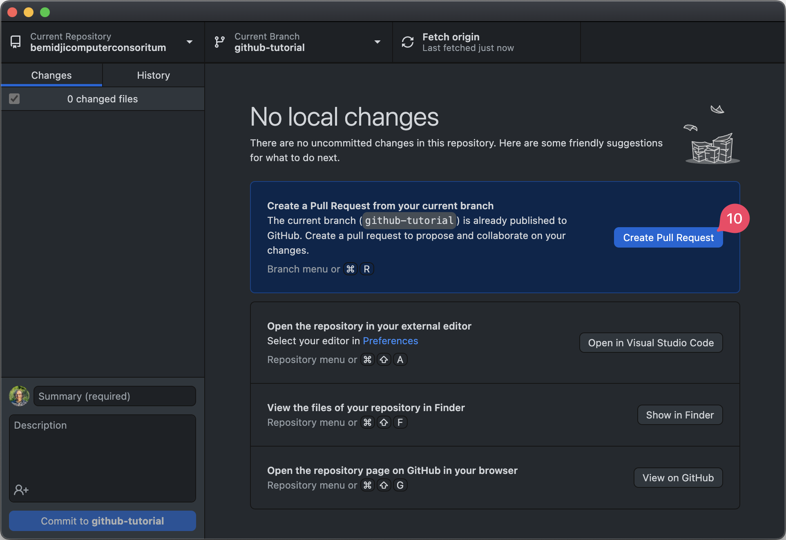
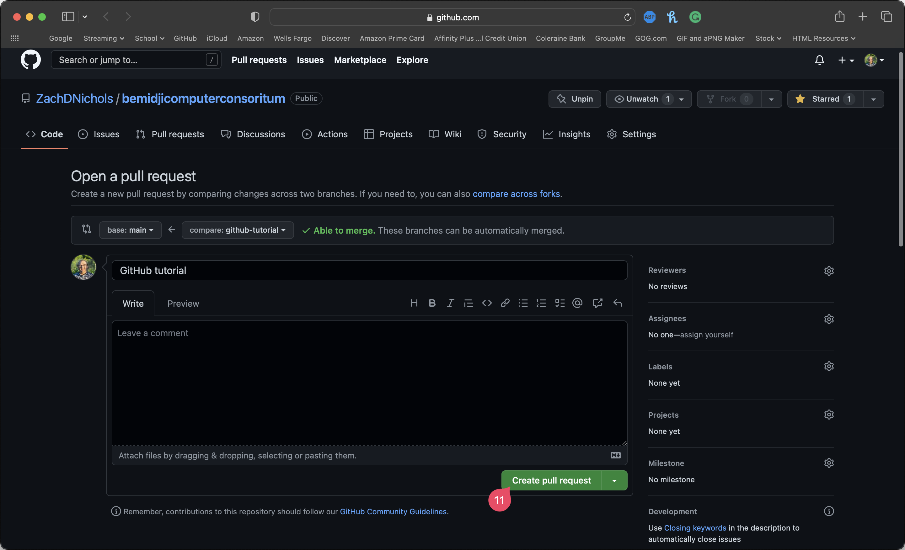
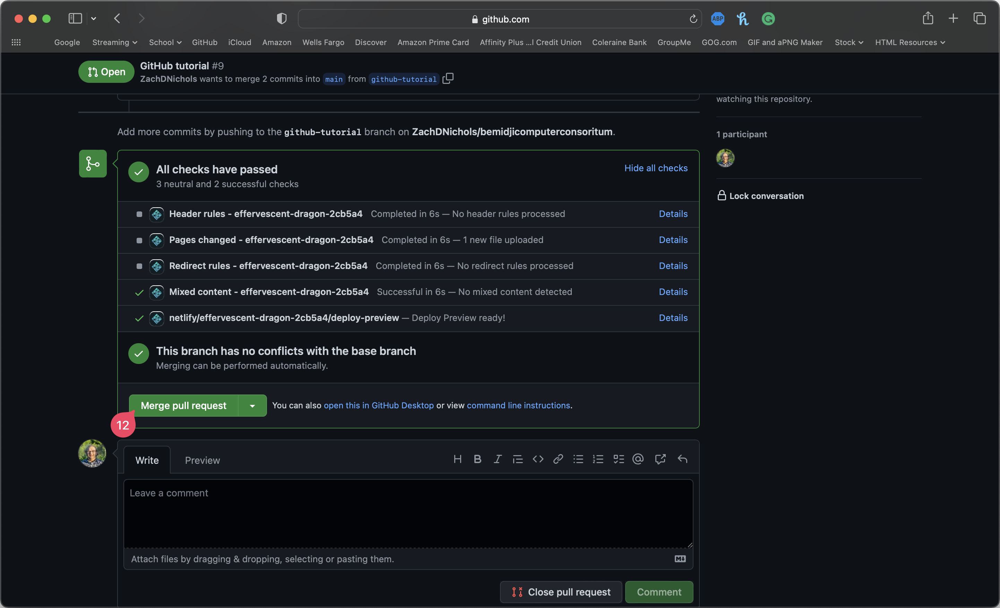
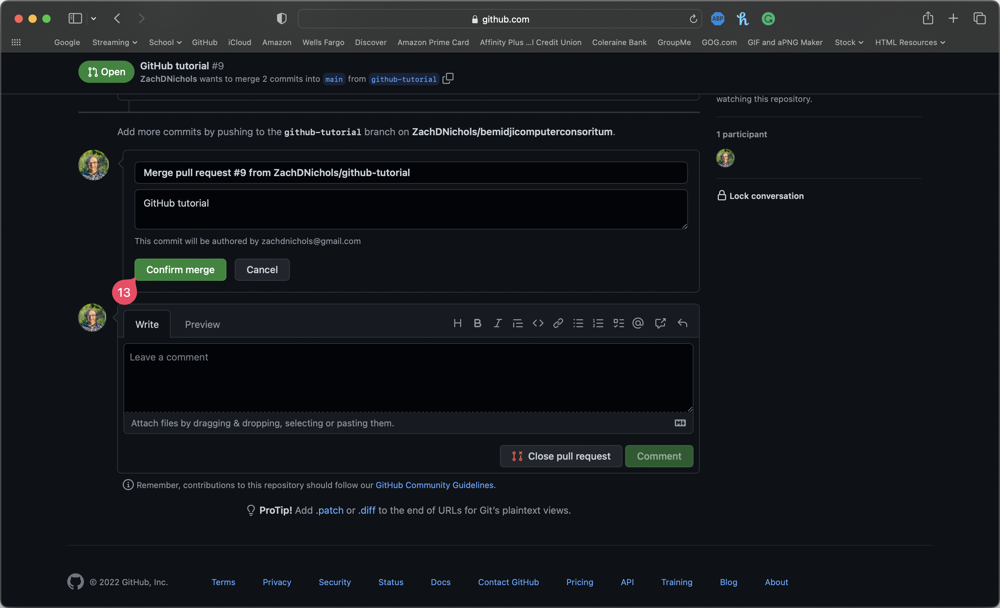
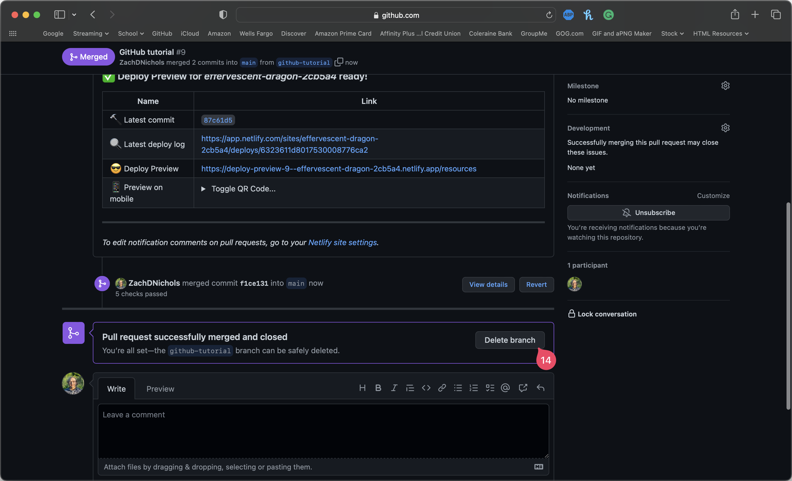

This guide will show you how to do branches and pull requests using the GitHub Desktop App. Branches are an important part of using Git and GitHub. Branches allow you to modify copies of the code without modifying the main branch, so if something goes wrong in a branch, the main branch is not affected. Performing a pull request is the process for merging a branch with a different branch. In order to do a pull request, the branches have to be different. Below we will show how to check out a branch, and perform a pull request using GitHub and the desktop app mentioned earlier. In this tutorial, we perform the operations on a Mac, but the operation is the same on Windows as well.
Select the drop-down menu for current branches in the GitHub desktop app.
Select new branch.
Here, you type out a name for the branch you are about to create (3). When you are done, click "Create Branch" (4).
To get your newly created branch to appear on the remote GitHub repository, you need to click the "Publish Branch" button (5).
Just like the main Git or GitHub branch, you can still commit to it. In this tutorial, we create a html page called "resources.html". You can add a title/summary for your comitted changes (6), add a longer description for the committed changes (7), and then click "Commit" to save your changes.
Once the commit is complete, you will want to click "Push Origin" (9). This will push the committed changes to the remote server, so anyone will be able to retrieve this changes. It is important you push to your branch before doing a pull request.
Once you have your changes committed and pushed to a new branch, to get it to the main branch, we need to do something called a "pull request". This will allow the two branches to be merged together. This will show you below how to complete a pull request.
Click the pull request button (10). This will open GitHub.com in your default browser.
When creating a pull request, you can add a title as well as a description to explain what you are merging. When finished, click "Create pull request" (11).
After clicking that page, you may have to scroll down a bit, but look for the green "Merge pull request" button (12).
Click the "Confirm merge" button to finalize your changes.
After you do that, you will have created your first pull request on GitHub. You can delete the branch (14) after you are finished if you have no further changes to make to this specific branch. Congratulations and happy coding!